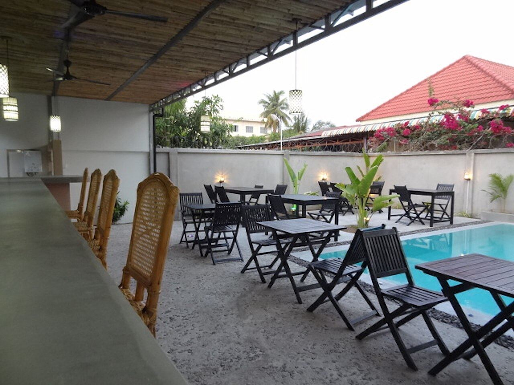
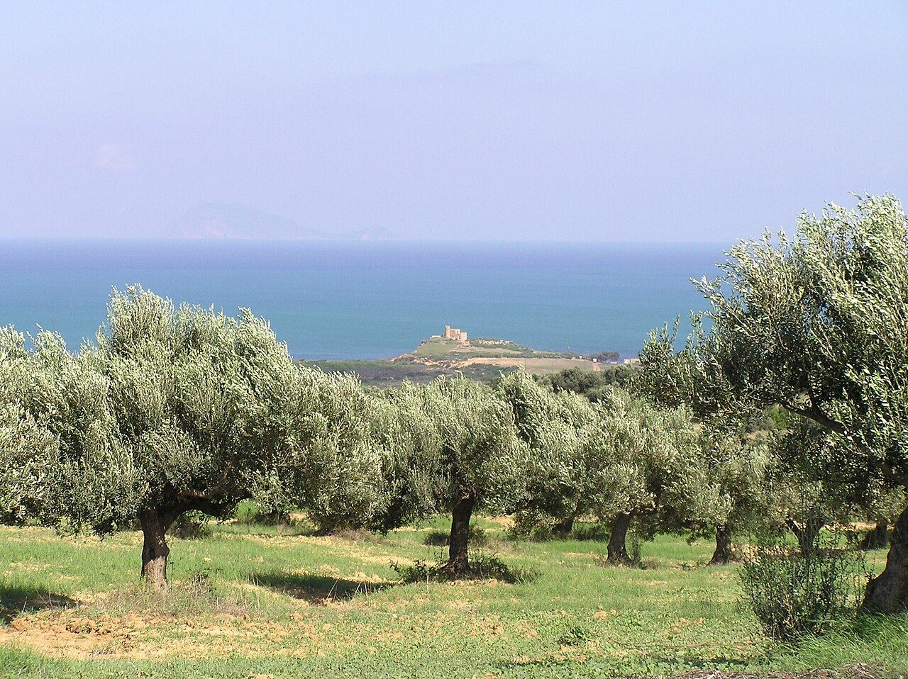
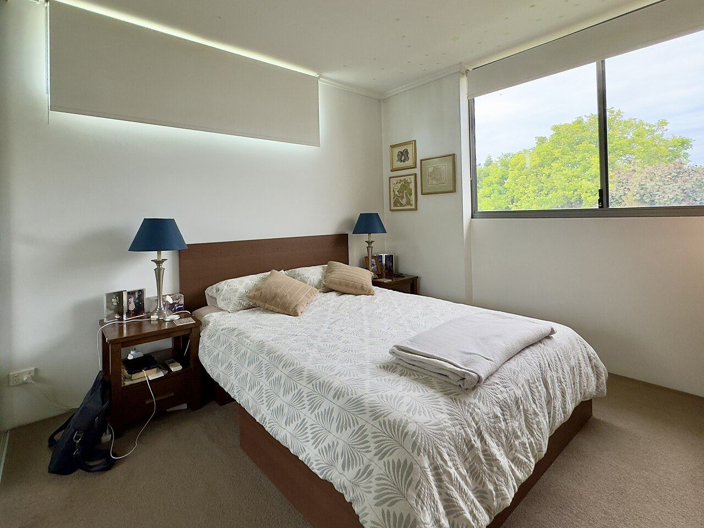
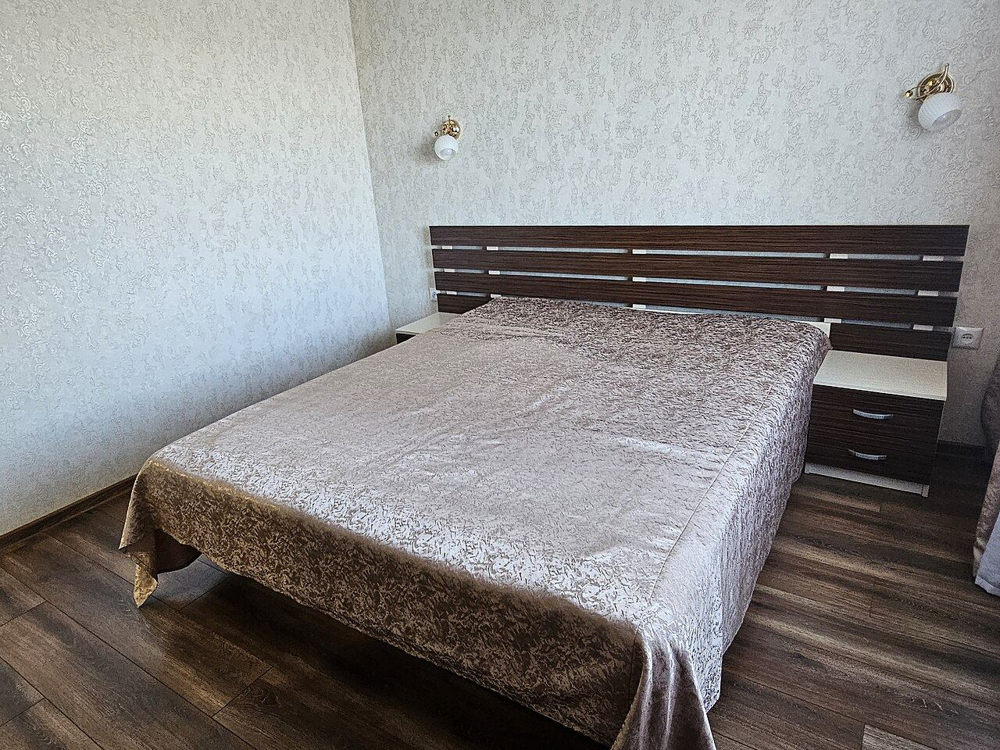

Suite vue sur le golfe
À l'étage, avec vue sur le golfe de Hammamet.
à partir de— à confirmer

Six suites et chambres sur 7 000 m² d'orangers et d'oliviers, un spa avec hammam, sauna et jacuzzi, et une table du terroir tunisien.
Ouverte en 2018 par Aziz et Leila, La Maison du Golfe accueille ses hôtes sur un domaine de 7 000 m² planté d'arbres fruitiers et d'oliviers, sur la route de la Faouara.
Spa avec hammam, sauna, piscine intérieure avec jacuzzi et salles de massage, piscine extérieure en saison, aire de jeux pour les enfants et cuisine partagée : un cadre pensé pour les familles comme pour les couples.

4 suites, 1 suite junior et 1 chambre. Petit-déjeuner servi de 7h30 à 9h30. Tarifs par nuit à confirmer.
À l'étage, avec vue sur le golfe de Hammamet.

Spacieuses, ouvertes sur les vergers.

Pour un couple ou un court séjour.
Photos d'ambiance sous licence libre (non contractuelles) — à remplacer par vos propres photos.
Servi de 7h30 à 9h30.
Hammam, sauna, jacuzzi pour les hôtes.
De juin à octobre.
Menus tunisiens sur réservation à confirmer
Aire de jeux dans le jardin.
Sur place.
Gratuit.
Plages, médina et Yasmine à proximité.
Notes publiques uniquement, avec leur source. Aucun avis n'a été inventé ni copié.
Spa, piscine, vergers et la mer toute proche. Photos d’ambiance — à remplacer par vos photos
Envoyez votre demande en 1 minute : la maison vous répond sur WhatsApp avec la disponibilité et le tarif.
À Bir Bou Rekba, entre vergers et oliviers, à quelques minutes des plages de Hammamet. Environ 1h de Tunis-Carthage.